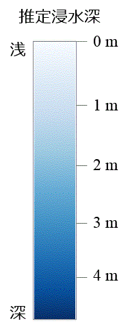

浸水推定図の種類
平成30年7月豪雨 浸水推定段彩図（空中写真判読版） 高梁川（岡山県倉敷市など）
平成30年7月豪雨 浸水推定段彩図（空中写真判読版） 肱川（愛媛県大洲市など）
令和元年台風第19号 浸水推定段彩図 鳴瀬川水系（吉田川）
令和元年台風第19号 浸水推定段彩図 阿武隈川水系（阿武隈川）
令和元年台風第19号 浸水推定段彩図 信濃川水系（千曲川）
令和元年台風第19号 浸水推定段彩図 久慈川水系（久慈川）
令和元年台風第19号 浸水推定段彩図 那珂川水系（那珂川）
令和元年台風第19号 浸水推定段彩図 荒川水系（入間川・越辺川・都幾川）
令和元年10月の低気圧に伴う大雨 浸水推定段彩図 空中写真判読版 一宮川水系（一宮川・豊田川・阿久川）茂原駅周辺
令和2年7月豪雨 浸水推定図 球磨川水系球磨川 人吉市周辺（2020年7月4日13時作成）
令和2年7月豪雨 浸水推定図 球磨川水系球磨川（2020年7月4日20時作成）
令和2年7月豪雨 浸水推定図佐敷川及び湯浦川流域 芦北町周辺（2020年7月4日22時作成）
令和2年7月豪雨 浸水推定図 大牟田市周辺（2020年7月7日9時作成）
令和2年7月豪雨 浸水推定図 筑後川水系花月川 日田市友田周辺（2020年7月7日14時作成）
令和2年7月豪雨 浸水推定図 矢部川水系矢部川 みやま市周辺（2020年7月8日9時作成）
令和2年7月豪雨 浸水推定図 筑後川水系筑後川第2報（2020年7月9日18時作成）
令和2年7月豪雨 浸水推定図 最上川水系最上川（2020年7月29日20時作成）
令和5年6月29日からの大雨 浸水推定図 筑後川水系 筑後川

洪水浸水想定区域
(想定最大規模)
20.0m以上
10.0 ～ 20.0m
5.0 ～ 10.0m
3.0 ～ 5.0m
0.5 ～ 3.0m
0.5m未満
指定緊急避難場所
不透明度
浸水推定図:
100%
洪水浸水想定区域:
100%
 指定緊急避難場所指定緊急避難場所
指定緊急避難場所指定緊急避難場所